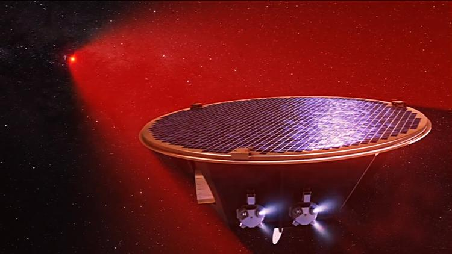
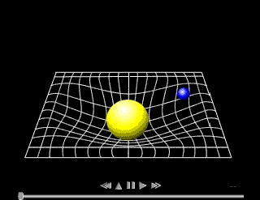
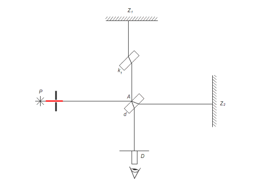
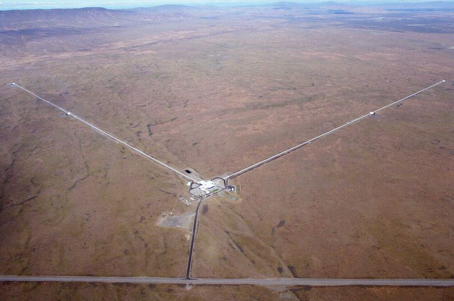
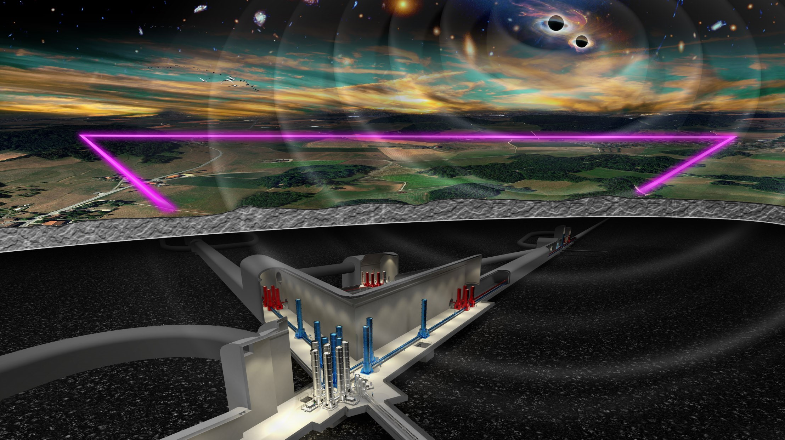
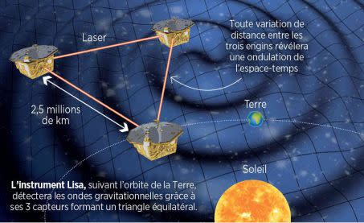

Les ondes gravitationnelles, LISA le projet fou de l'ESA
 Représentation d'un des satellites de la constallation LISA ©AEI/MildeMarketing/Exozet
Les ondes gravitationnelles qu'est ce que c'est ?
"Onde gravitationnelle", voici un terme qui peut sembler tout droit sorti d'un film de science-fiction, et pourtant ce phénomène est bel et bien réel !
Il s'agit là d'une des découvertes les plus récentes et fascinantes en physique... Pour comprendre ce que sont ces ondes, il faut d'abord plonger dans l'histoire de la théorie de la gravité et de l'Univers
Une idée née avec Albert Einstein
L'histoire des ondes gravitationnelles commence au début du XXe siècle, avec le génie d'Albert Einstein. En 1915, dans le cadre de sa théorie de la relativité générale
Einstein bouleverse notre compréhension de l'espace, du temps et de la gravitation.
Contrairement à l'idée de Newton qui pensait que la gravité était une force instantanée agissant à distance, Einstein propose que la gravité est le résultat de la courbure de l'espace-temps, cette sorte de toile invisible sur laquelle tout, y compris la lumière, évolue.
Imaginez l'espace-temps comme un gigantesque trampoline. Si vous placez une balle lourde au centre, elle déforme la toile, créant une sorte de "creux". De la même manière, les corps massifs comme les planètes ou les étoiles courbent l'espace-temps autour d'eux, et c'est cette courbure qui crée ce que nous ressentons comme la gravité.

Illustration de la courbure de l'espace-temps, responsable de la force de gravité d'un objet autour d'un astre
Mais Einstein ne s'est pas arrété là. En analysant plus en profondeur les effets de ces déformations, il a compris que lorsque des objets massifs se déplacent rapidement, comme deux étoiles en orbite l'une autour de l'autre, ils peuvent provoquer des ondulations dans l'espace-temps, un peu comme des vagues sur l'eau.
Ces ondulations, ou "ondes gravitationnelles", se propagent à travers l'Univers, en emportant avec elles des informations précieuses sur l'origine des évenements cosmiques qui les ont créées.
 Illustration de l'émission d'ondes gravitationnelles par un système double d'étoiles à neutrons
Illustration de l'émission d'ondes gravitationnelles par un système double d'étoiles à neutrons
Qu'est ce qu'une onde gravitationnelle ?
Mais alors, qu’est-ce qu’une onde gravitationnelle exactement ? Comme mentionné précédemment, il s’agit de petites ondulations dans la structure de l’espace-temps. Ces ondulations se propagent à la vitesse de la lumière, emportant avec elles des informations sur les phénomènes extrêmes qui les ont générées. Par exemple, lorsqu’une étoile massive explose en supernova, ou lorsque deux trous noirs se percutent, ces événements créent des ondes gravitationnelles qui se déplacent à travers l’Univers.
L’onde elle-même est à la fois une déformation de l’espace et du temps. Imaginez que vous jetiez une pierre dans un lac calme : l'onde se propage à la surface de l'eau. De façon similaire, une onde gravitationnelle déforme l’espace-temps en se déplaçant, provoquant de petites variations dans la distance entre deux objets. Ces variations sont incroyablement petites, de l'ordre de la fraction d'un milliardième de la largeur d'un proton, ce qui rend leur détection extrêmement difficile, mais aussi incroyablement fascinante.
Pourquoi est-ce important ?
La détection des ondes gravitationnelles n’est pas seulement une prouesse technologique. Elle ouvre une nouvelle fenêtre sur l’Univers. Grâce à elle, les astrophysiciens peuvent désormais observer des phénomènes invisibles à travers la lumière, comme les trous noirs ou les collisions d’étoiles à neutrons, qui ne peuvent pas être détectés par des télescopes traditionnels.
Les ondes gravitationnelles sont donc une véritable révolution, car elles permettent aux scientifiques d’explorer des aspects de l’Univers qui étaient jusque-là hors de portée. Elles ajoutent une nouvelle dimension à notre compréhension du cosmos, permettant de tester les théories d’Einstein dans des conditions extrêmes et d’en apprendre davantage sur la nature même de l’espace et du temps.
Comment détecter des ondes graviationnelles ?
L'existence des ondes graviationnelles confirmée... un siècle plus tard !
L’idée d’ondes gravitationnelles semblait presque trop abstraite pour être testée directement. En effet, ces ondulations sont extrêmement faibles et difficilement détectables par nos instruments. Pendant plus de 100 ans, bien que les équations d'Einstein prédisent leur existence, il n'existait aucune preuve concrète de leur présence. Pourtant, la théorie restait convaincante, et les scientifiques persistaient dans leur quête pour trouver une méthode de détection.
Ce n’est qu’en 2015, un siècle après la publication de la relativité générale, que la communauté scientifique a réussi à observer directement ces ondes, marquant ainsi une victoire retentissante pour la physique moderne. Ce grand moment a eu lieu grâce aux détecteurs LIGO (Laser Interferometer Gravitational-Wave Observatory) aux États-Unis, qui ont enregistré des vibrations minuscules dans l’espace-temps, résultant de la collision de deux trous noirs supermassifs.
LIGO : Une technologie de pointe pour détecter des ondes infimes
LIGO utilise une technique appelée interférométrie à laser pour détecter les ondes gravitationnelles. L’idée est simple en théorie : un faisceau laser est divisé en deux "sous-faisceaux", qui voyagent dans des bras perpendiculaires (de 4 kilomètres de long chacun) avant de se refléter sur des miroirs et de se recombiner. En cas de passage d'une onde gravitationnelle, l’espace-temps se déforme légèrement, modifiant la longueur de chaque bras du détecteur. Cela entraîne un décalage dans la recombinaison des faisceaux, qu'un détecteur de lumière capte.
Les instruments de LIGO sont capables de mesurer des variations de longueur aussi petites que le milliardième de la taille d'un proton, soit une précision stupéfiante pour des détecteurs situés à des kilomètres de distance. Cela nécessite un environnement extrêmement stable, loin de toute source de bruit mécanique et thermique, ce qui explique pourquoi les installations de LIGO sont situées dans des zones isolées des États-Unis (à Livingston, en Louisiane, et Hanford, dans l'État de Washington).

Représentation d'un interféromètre de Michelson

Photo de LIGO près de Hanford
Virgo : Un partenaire européen clé
Le détecteur Virgo, situé à Cascina, en Italie, fonctionne sur le même principe que LIGO, mais il est légèrement plus petit (environ 3 kilomètres de long pour chaque bras). Son rôle dans l’astronomie des ondes gravitationnelles est complémentaire à celui de LIGO. En associant les données de LIGO et Virgo, les scientifiques peuvent déterminer plus précisément l’emplacement et les caractéristiques des événements astrophysiques qui génèrent des ondes gravitationnelles, tels que la fusion de trous noirs ou d’étoiles à neutrons.
En outre, les collaborations entre LIGO et Virgo ont permis d’élargir la fenêtre d'observation. Lorsque deux détecteurs (ou plus) enregistrent le même signal, il est possible de trianguler l’origine de l’onde gravitationnelle, ce qui permet aux astronomes d’explorer ces phénomènes d’un point de vue multi-messager en combinant les observations d’ondes gravitationnelles, d’ondes électromagnétiques et de rayons cosmiques.
Un futur prometteur
Depuis leur première détection en 2015, les observatoires LIGO et Virgo ont observé des dizaines de signaux provenant de fusions de trous noirs, de binaires d’étoiles à neutrons, et d’autres phénomènes cosmiques extrêmes. Ces observations ont ouvert une nouvelle branche de l’astronomie, permettant aux scientifiques d’étudier l'univers d’une manière totalement inédite.
Le futur de la détection des ondes gravitationnelles est prometteur avec des projets comme KAGRA au Japon, et le futur détecteur Einstein Telescope en Europe, qui amélioreront encore la sensibilité des instruments. Ces avancées pourraient bien révolutionner notre compréhension des phénomènes astrophysiques, et nous rapprocher d’une meilleure compréhension de la nature de l’espace-temps lui-même.
Les détecteurs LIGO et Virgo continuent de jouer un rôle clé dans la cartographie de l'univers, offrant des aperçus qui étaient auparavant impossibles, et prouvant chaque jour que la quête scientifique pour comprendre l'univers ne cesse d’évoluer.

Vue d'artiste du Einstein Telescope ©CNRS/Marco Kraan, Nikhef
LISA : Laser Interferometer Space Antenna
LISA (Laser Interferometer Space Antenna) est un projet ambitieux et révolutionnaire dans le domaine de l'astronomie des ondes gravitationnelles, et il marque un tournant dans notre capacité à explorer l'univers à travers les distorsions de l'espace-temps. Contrairement à ses homologues terrestres, tels que LIGO et Virgo, LISA sera situé dans l’espace et opérera dans une gamme de fréquences beaucoup plus basse, ouvrant ainsi une nouvelle dimension de détection des ondes gravitationnelles.
Un détecteur spatial pour les ondes de basses fréquences
L'une des principales différences entre LISA et les détecteurs terrestres comme LIGO et Virgo réside dans la fréquence des ondes gravitationnelles que chaque instrument est conçu pour détecter. LIGO et Virgo sont optimisés pour observer des ondes de haute fréquence, généralement générées par des événements tels que la fusion de trous noirs stellaires ou d'étoiles à neutrons. En revanche, LISA sera capable de détecter des ondes gravitationnelles de fréquences beaucoup plus basses, typiquement de l'ordre de 0,1 à 1 Hz, ce qui correspond à des phénomènes cosmiques beaucoup plus lointains et massifs.
Ces basses fréquences sont créées par des événements tels que la fusion de trous noirs supermassifs, la coalescence de systèmes binaires de trous noirs ou d’étoiles à neutrons dans des galaxies lointaines, ainsi que par des fluctuations dans l’espace-temps dues à la présence de structures massives à grande échelle. Ces types d'événements échappent à la détection par les instruments terrestres, qui sont sensibles à des gammes de fréquences plus élevées.
La Conception de LISA : Trois Satellites en Formation Triangulaire
LISA ne sera pas un seul instrument, mais plutôt une constellation de trois satellites qui seront placés en orbite autour du Soleil, formant un triangle équilatéral avec des bras de détection d'environ 2,5 millions de kilomètres de long. Ces satellites, qui seront en formation triangulaire, se déplaceront en parfaite synchronisation pour mesurer les distorsions minimes de l’espace-temps induites par les ondes gravitationnelles.
Chaque bras de cette formation triangulaire servira à mesurer l'écart de distance entre deux satellites distants, avec une précision incroyable. Ces mesures seront basées sur des lasers, qui émettront des faisceaux entre les satellites. Quand une onde gravitationnelle traverse l’espace, elle modifie légèrement la distance entre les satellites, et ces variations infimes seront détectées par les instruments sur chaque satellite. La conception de la mission garantit que les effets de bruit, comme ceux causés par l'environnement spatial ou les mouvements des satellites eux-mêmes, soient minimisés pour assurer des mesures aussi précises que possible.

Vue d'artiste de la constellation LISA ©Bruno Bourgeois
La Technologie Laser et l’Interférométrie Spatiale
LISA reposera sur une technologie similaire à celle de LIGO et Virgo, à savoir l’interférométrie laser. Cela implique l’utilisation d'un laser pour envoyer des faisceaux lumineux entre les trois satellites. Si une onde gravitationnelle traverse la zone, elle modifie l’espace-temps et donc la longueur des bras du détecteur, entraînant une différence dans le temps que prend la lumière pour parcourir chaque bras. Cette variation minuscule est mesurée avec une précision exceptionnelle, permettant de détecter les déformations de l'espace-temps provoquées par les ondes gravitationnelles.
Cependant, contrairement à LIGO et Virgo qui sont basés sur Terre et confrontés aux turbulences atmosphériques et au bruit du sol, LISA bénéficiera de l'absence d'atmosphère, ce qui permettra une sensibilité bien plus grande. De plus, les perturbations gravitationnelles liées à la Terre, comme les mouvements de la croûte terrestre, n'affecteront pas LISA, car les satellites seront dans l'espace, à l’abri de ces influences locales.
L'objectif scientifique de LISA
LISA permettra d’observer des événements astrophysiques qui étaient auparavant invisibles aux détecteurs au sol. En particulier, elle permettra d’étudier les fusions de trous noirs supermassifs, qui se produisent dans des galaxies très lointaines, ainsi que des systèmes binaires d'étoiles à neutrons dans des régions de l'univers qui échappent à notre portée actuelle. Ces phénomènes sont des sources puissantes d'ondes gravitationnelles, mais leurs signaux ne sont pas détectables avec les instruments actuels au sol en raison de leurs faibles fréquences.
LISA pourrait aussi observer des oscillations très faibles dans l’espace-temps causées par les effets de la matière noire ou de l'énergie noire, deux des plus grands mystères de la cosmologie moderne. Ces recherches pourraient aussi offrir de nouvelles perspectives sur l'inflation cosmique, l'expansion rapide de l'univers au tout début de sa naissance, qui pourrait se manifester par des ondes gravitationnelles primordiales capturées par LISA.
Un Lancement Attendu pour la Fin des Années 2030
Le lancement de LISA est prévu pour la fin des années 2030, et il est l’un des projets phares de l'Agence spatiale européenne (ESA), en collaboration avec la NASA. Avant son lancement, de nombreux tests et simulations devront être réalisés pour garantir que l'ensemble du système spatial fonctionne avec la précision requise. Cette mission s’inscrit dans un avenir où l’étude des ondes gravitationnelles depuis l’espace devrait compléter et enrichir les découvertes réalisées par les détecteurs au sol comme LIGO et Virgo, tout en ouvrant de nouvelles avenues pour l’exploration de l’univers.
En résumé, LISA est destiné à être un instrument fondamental dans l’astronomie moderne, apportant un éclairage nouveau sur des phénomènes astrophysiques extrêmes qui étaient jusqu’ici hors de notre portée. Avec sa capacité à détecter les ondes gravitationnelles de basses fréquences, LISA va non seulement enrichir notre compréhension de l’univers, mais aussi étendre les frontières de la physique fondamentale.
Pour aller plus loin
Si ce sujet vous intéresse, je peux vous réorienter vers mon rapport de fin d'études au CPPM, qui développe les aspects ondes gravitationnelles, mais également la détection, avec un prototype de banc de test interférométrique pour LISA :
©Alexandre Condette
Sources
LISA Mission Overview - European Space Agency (ESA)
La source officielle de l'ESA présente les détails de la mission LISA, sa conception, ses objectifs scientifiques, et son impact potentiel pour l’astronomie des ondes gravitationnelles.
LISA Mission Overview - ESANASA's LISA Overview
La NASA fournit un aperçu détaillé de LISA, en particulier du partenariat avec l'ESA et de son rôle dans l'exploration des ondes gravitationnelles dans l'espace.
NASA LISA OverviewLISA: A New Window on the Universe - Nature Astronomy (2020)
Cet article publié dans Nature Astronomy offre une présentation approfondie de la mission LISA, y compris ses objectifs, ses défis technologiques, et ses perspectives scientifiques.
LISA: A New Window on the Universe - Nature AstronomyGravitational Wave Detection and LIGO - National Science Foundation (NSF)
Cette source fournit une vue d'ensemble sur les principes de la détection des ondes gravitationnelles à travers des détecteurs comme LIGO, ainsi que le rôle de ces instruments dans la compréhension des ondes gravitationnelles.
NSF - LIGO and Gravitational WavesThe LIGO Scientific Collaboration
Le site officiel de la collaboration LIGO qui fournit des détails sur les découvertes passées, la technologie utilisée, ainsi que les résultats scientifiques des détecteurs LIGO et Virgo.
LIGO Scientific CollaborationVirgo Collaboration - Gravitational Waves
Le site de la collaboration Virgo explique son rôle dans l'observation des ondes gravitationnelles et son partenariat avec LIGO, fournissant des informations techniques sur le détecteur Virgo.
Virgo Collaboration"LISA: The Laser Interferometer Space Antenna" - European Space Agency
Ce document de l'ESA présente de manière détaillée les principes scientifiques et techniques de LISA, ainsi que les objectifs de la mission dans l’étude des ondes gravitationnelles.
LISA: The Laser Interferometer Space Antenna - ESAGravitational Waves - LIGO Scientific Collaboration
La collaboration LIGO offre une vue d'ensemble complète sur la découverte des ondes gravitationnelles, leur détection et les implications scientifiques de ces phénomènes.
Gravitational Waves - LIGO Scientific CollaborationGravitational Waves: What Are They? - NASA
Une ressource de la NASA expliquant ce que sont les ondes gravitationnelles, comment elles sont générées, et comment elles nous permettent de sonder l'univers de manière inédite.
Gravitational Waves: What Are They? - NASAThe Discovery of Gravitational Waves - PBS Nova
Ce documentaire de PBS Nova explique la découverte historique des ondes gravitationnelles, avec des interviews et des explications sur les chercheurs impliqués et la technologie utilisée pour détecter ces ondulations dans l’espace-temps.
The Discovery of Gravitational Waves - PBS NovaGravitational Waves: A New Era in Astronomy - The Royal Society
La Royal Society explore comment la détection des ondes gravitationnelles ouvre une nouvelle ère dans l'astronomie, en permettant d'observer des événements cosmiques qui étaient auparavant invisibles.
Gravitational Waves: A New Era in Astronomy - The Royal SocietyThe Role of Gravitational Waves in Cosmology - Scientific American
Un article de *Scientific American* qui explore l'importance des ondes gravitationnelles pour la cosmologie moderne et leur potentiel pour résoudre des mystères de l'univers.
The Role of Gravitational Waves in Cosmology - Scientific AmericanGravitational Waves: A Primer - American Physical Society (APS)
Un guide détaillé de l'American Physical Society qui présente les principes fondamentaux des ondes gravitationnelles, leur détection, et leurs applications en physique.
Gravitational Waves: A Primer - APSThe First Detection of Gravitational Waves - LIGO Scientific Collaboration
Un rapport détaillant la première détection des ondes gravitationnelles par LIGO en 2015, et son importance historique pour la physique et l'astronomie.
The First Detection of Gravitational Waves - LIGO